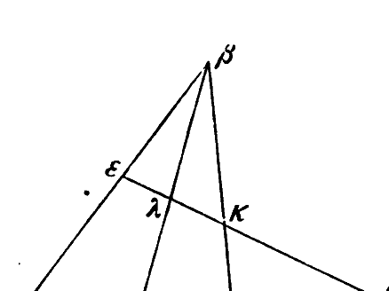
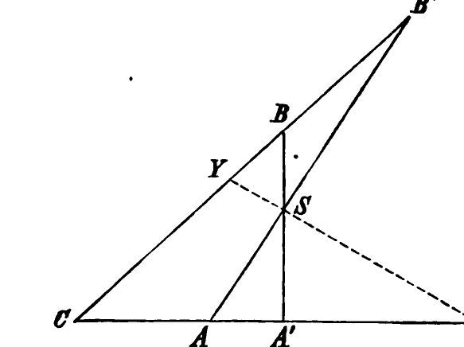

Proposition 129: Cross-Ratio Invariance Across Central Projection¶
Synagoge Book VII, Proposition 129 (Hultsch II, pp. 870–872, Lemma III to Euclid’s Porisms; App. IV, pp. 1263–1266)
Proposition 129 (Lemma III to Euclid’s Porisms): If from a single point $O$ four straight rays are drawn, and two transversals fall across them cutting them in points $A, B, C, D$ and $A', B', C', D'$, then the compound ratio of the whole segment and the middle segment to the extremes on the first line equals the compound ratio on the second line:
Demonstration: Through $B$ draw a straight line parallel to the ray $OD$, meeting $OA$ at $E$, $OC$ at $F$, and $OD$ at infinity. By similar triangles across parallels:
Compounding the ratios eliminates the unmeasured distance to the transversal apex $O$:
Because the ratio $\frac{FB}{EB}$ depends solely on the angle of the rays and the transversal direction, the double ratio (διπλοῦς λόγος) is invariant under projection.
Archival Plates (Hultsch Vol. III, Appendix IV, pp. 1264, 1266)¶



